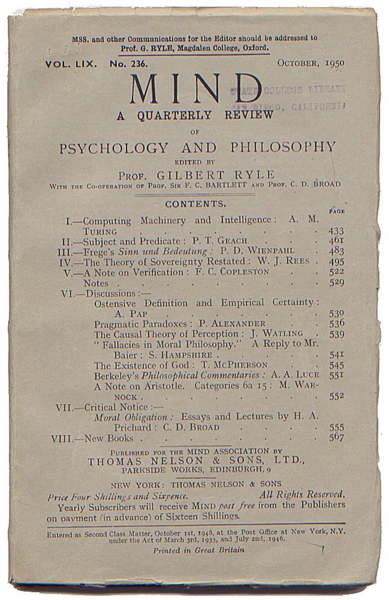
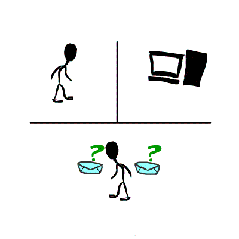
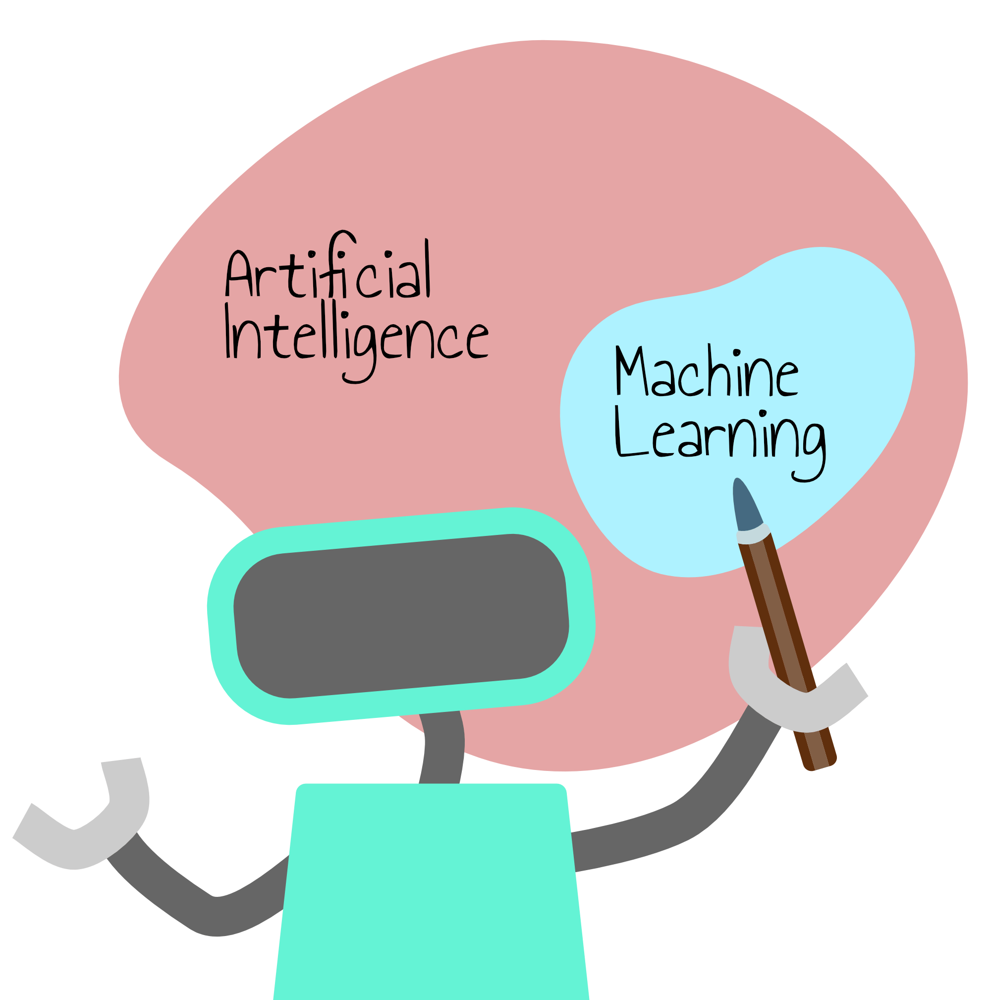

Gestatten Sie mir, mich vorzustellen. Ich bin Lisa, eine KI-Forscherin.
Heute möchte ich Sie auf eine spannende Reise durch die Entwicklung der KI mitnehmen.
Sind Sie bereit, diese fantastische Geschichte zu erkunden?
Tauchen wir ein!
Die Erschaffung intelligenter Maschinen ist seit langem ein fesselnder Traum der Menschheit. Zu Beginn des 20. Jahrhunderts wurde dieser Traum von der Science-Fiction befeuert, die der Welt das Konzept künstlich intelligenter Roboter vorstellte. Erinnern Sie sich an den „herzlosen“ Blechmann aus Der Zauberer von Oz oder an den kultigen humanoiden Roboter Maria aus Metropolis? Solche Figuren regten die Fantasie an und inspirierten die wissenschaftliche Forschung, die darauf abzielte, die Fähigkeiten des Denkens und Lernens auf eine Maschine zu übertragen.
Sehen Sie sich die folgende Szene aus dem Film „Metropolis“ an, einem deutschen expressionistischen
Science-Fiction-Stummfilm, der 1927 in Babelsberg gedreht wurde. Vergleichen Sie diese historische Darstellung einer intelligenten Maschine mit
modernen KI-Systemen. Was ist ähnlich und was ist anders?
In den 1950er Jahren bewegte dies die akademische Welt sehr stark und Naturwissenschafter, Mathematiker und Philosophen diskutierten intensiv die Frage
„Können Maschinen denken?“ Eine der prominentesten Stimmen war Alan Turing, der oft als Vater der modernen Informatik bezeichnet wird.
Im Jahr 1950 veröffentlichte Turing einen bahnbrechenden Aufsatz mit dem Titel „Computing Machinery and Intelligence“. Darin untersuchte er die Möglichkeit,
dass Maschinen menschliche Intelligenz simulieren und Aufgaben, wie z.B. Schachspielen, ausführen können. Er führte auch eine Methode ein, um die Fähigkeit einer
Maschine zu bewerten, intelligentes Verhalten zu zeigen, das nicht von dem eines Menschen zu unterscheiden ist. Diese Methode wurde zum berühmten „Turing-Test“.

In MIND, A Quarterly Review of Psychology and Philosophy, Vol. 59, No. 236, October, 1950, pp. 433-460. New York.
Der Test ist einfach. Ein Befrager führt ein textbasiertes Gespräch mit zwei unsichtbaren Teilnehmern - einem Menschen und einer Maschine. Wenn der Befrager die beiden nicht zuverlässig auseinanderhalten kann, hat die Maschine den Test bestanden, was darauf hindeutet, dass sie auf eine menschenähnliche Weise „denken“ kann.
Wie bewerten Sie diesen Test? Kann man damit "Künstliche Intelligenz" identifizieren?

Holly Bellman. (2013). Turing-test.gif [GIF]. Wikimedia Commons. https://commons.wikimedia.org/wiki/File:Turing-test.gif
Die Diskussion über intelligente Maschinen begann zwar schon früher, doch der Begriff „Künstliche Intelligenz“ wurde offiziell 1955 geprägt, als ein Vorschlag für das Dartmouth Summer Research Project am Dartmouth College in den USA gemacht wurde. 1956 brachte dieser Workshop Forscher aus verschiedenen Bereichen zusammen, die später als die Gründerväter der KI galten, um KI als neues Forschungsgebiet zu etablieren, das darauf abzielt, Maschinen zu entwickeln, die menschliche Intelligenz simulieren können.
Auf dem Dartmouth AI-Workshop 1956 versammelten sich die Organisatoren und einige andere Teilnehmer vor der Dartmouth Hall. In der hinteren Reihe von links nach rechts sind Oliver Selfridge, Nathaniel Rochester, Marvin Minsky und John McCarthy zu sehen. Vorne links steht Ray Solomonoff, rechts Claude Shannon. Die Identität der Person zwischen Solomonoff und Shannon blieb lange Zeit ein Rätsel. Die Familie Minsky (https://spectrum.ieee.org/dartmouth-ai-workshop)
Diese Veranstaltung markierte den Beginn des ersten KI-Sommer (1957 bis 1974), eine Zeit des Optimismus und bedeutender Investitionen in die KI-Forschung. Für einiges Aufsehen sorgte in dieser Zeit ELIZA, quasi der erste Chatbot der Welt. Das Programm wurde zwischen 1964 und 1966 von Joseph Weizenbaum am MIT entwickelt. ELIZA konnte eine Unterhaltung mit einem Menschen simulieren, was zu dieser Zeit eine bahnbrechende Leistung war.

Joseph Weizenbaum wurde 1923 in Berlin geboren. An seinem 13. Geburtstag wanderte seine Familie in die USA aus. Weizenbaum studierte Mathematik in Detroit. Als Forschungsassistent beteiligte er sich mit Begeisterung am Bau eines Universitätscomputers. 1963 ging er ans MIT, sah die universellen Einsatzmöglichkeiten von Computern und erfand das Programm ELIZA, benannt nach der Hauptfigur in George Bernard Shaws „Pygmalion“. ELIZA wurde als ein Meilenstein der Künstlichen Intelligenz anerkannt. Übrigens: Joseph Weizenbaum selbst war über die Wirkung seines Programms regelrecht schockiert und hat sich anschließend zu einem der wehementesten Kritiker der KI entwickelt „Der Ketzer der Informatik".
Gesellschaft für Informatik. (n.d.). Joseph Weizenbaum [Photograph]. GI - Gesellschaft für Informatik e.V. [Website]. https://gi.de/persoenlichkeiten/joseph-weizenbaum
Stellen Sie sich vor, Sie befinden sich in den 60er Jahren und haben die Möglichkeit, mit dem Chatbot Eliza zu interagieren. Chatten Sie mit Eliza und beobachten Sie, wie das Programm reagiert. Wirkt es menschlich auf Sie?
Zwei wichtige Ansätze haben sich in diesem Sommer der künstlichen Intelligenz herauskristallisiert:
1. Wissensbasierte KI (auch bekannt als Regelbasierte- oder Symbolische KI):
Bei diesem Ansatz wird menschliches Wissen explizit in Form von Fakten und Regeln in Computern kodiert,
so dass die Systeme logische Schlussfolgerungen ziehen können. Sie zeichnet sich bei Aufgaben wie mathematischem
Beweisen und Planungsaufgaben aus.
2. Maschinelles Lernen und künstliche neuronale Netze (kNNs):
Inspiriert von unseren biologischen Neuronen haben Forscher in dieser Zeit auch künstliche Neuronale Netzwerke entwickelt.
Das Ziel bestand u.a. darin, eine Maschine zu bauen, die ihre Umgebung ohne Unterstützung durch einen Menschen wahrnehmen und erkennen kann.
Beiden Ansätzen waren damals jedoch enge Grenzen gesetzt. Auf der einen Seite hat die Wissensbasierte KI mit komplexen, realen Problemen zu kämpfen, die sich nicht sauber durch Regeln definieren lassen, wie etwa die Bilderkennung. Frühe kNNs wurden durch den Mangel an geeigneten Trainingsdatensätzen und der damals unzureichenden Rechenleistung behindert.
Als die in dieser Zeit entwickelten Systeme die in sie gesetzten Erwartungen nicht erfüllten, wurden die Mittel für die KI-Forschung
stark gekürzt. Diese Zeit wurde „KI-Winter“ genannt. In den folgenden Jahren erlebte die KI einen weiteren „KI-Sommer,
gefolgt von einem weiteren Winter (1987-1993), da die ehrgeizigen Ziele erneut nicht erreicht wurden.
Dennoch wurden in den 1990er und 2000er Jahren wichtige Meilensteine erreicht. 1997 besiegte Deep Blue von IBM den amtierenden Schachweltmeister
Garry Kasparov mit Hilfe Wissensbasierter KI-Ansätze. Dieses vielbeachtete Match war ein entscheidender Moment, der zeigte,
dass Maschinen den Menschen bei komplexen intellektuellen Aufgaben übertreffen können.
Sehen Sie sich das folgende Video über IBMs Deep Blue an. In diesem Video erzählen die Entwickler, wie sie gewonnen haben und welche Bedeutung dieser Erfolg für die Computerbranche hat. Würden Sie Deep Blue auch als Meilenstein in der KI-Entwicklung ansehen?
In den letzten Jahrzehnten hat die Künstliche Intelligenz dank der Leistungsfähigkeit des Maschinellen Lernens (ML) eine bemerkenswerte Zugkraft erlangt. ML ist zum Rückgrat der verbreitetsten KI-Systeme von heute geworden. Es ist der Grund, warum Computer heute Ihr Gesicht erkennen, Ihre Stimme verstehen und sogar bei der Früherkennung von Krankheiten helfen können.

Im Gegensatz zur traditionellen Programmierung, bei der Computern explizite Anweisungen gegeben werden, ermöglicht Maschinelles Lernen Computern, aus Erfahrungen zu lernen, aus Daten. ML-Algorithmen können Daten wie Bilder, Videos, Audio und Text aufnehmen und darin Muster erkennen, welche helfen, die gestellte Aufgabe zu lösen. Einmal trainiert, können diese Modelle z.B. Vorhersagen machen oder neue Inhalte generieren.
Ein beliebtes Beispiel für ein KI-System ist eines, das Katzen und Hunde erkennen kann. Um ein solches System zu entwickeln, können wir maschinelles Lernen einsetzen. Das folgende Spiel soll Spaß machen und die zentrale Idee des Maschinellen Lernens veranschaulichen, d.h. aus Daten lernen. Nun ist es Ihre Aufgabe, die Maschine mithilfe der Technik des Maschinellen Lernens dazu zu bringen, Katzen und Hunde zu erkennen.
Das Wiederaufleben des Maschinellen Lernens und insbesondere des Deep Learning (eine Untergruppe des maschinellen Lernens, die neuronale Netze mit mehreren Schichten umfasst) lässt sich auf drei Hauptfaktoren zurückführen:
1. Big Data:
Das digitale Zeitalter hat eine noch nie dagewesene Menge an Daten aus dem Internet, den sozialen Medien, intelligenten Geräten
und vielem mehr hervorgebracht. Diese Fülle an Daten liefert den Treibstoff, den maschinelle Lernalgorithmen zum Lernen und Verbessern benötigen.
2. Hardware-Verbesserungen:
Fortschritte bei der Hardware, insbesondere die Entwicklung von Grafikprozessoren (GPUs),
haben die für das Training komplexer Modelle erforderliche Zeit drastisch verkürzt.
3. Fortschritte bei den KI-Techniken:
Innovative Algorithmen und Architekturen im Bereich des Deep Learning haben zur Weiterentwicklung der KI-Fähigkeiten geführt.
Lange Zeit ging man davon aus, dass künstlerische und kreative Aufgaben wie das Schreiben von Gedichten, das Erstellen von Software,
das Entwerfen von Mode und das Komponieren von Liedern nur von Menschen ausgeführt werden können. Diese Annahme hat sich mit den jüngsten
Fortschritten in der KI-Technologie drastisch geändert. Die jüngsten Fortschritte auf dem Gebiet der KI haben die Entwicklung von KI-Systemen
ermöglicht, die auf sehr realistische und beeindruckende Weise neue Inhalte generieren können. Generative KI-Systeme sind Systeme,
die in der Lage sind, Inhalte wie Text, Programmcode, Bilder, Ton oder Videos zu erzeugen.
Ein berühmtes Beispiel für ein solches KI-System ist ChatGPT, das von der Firma OpenAI im
November 2022 auf den Markt gebracht wurde. Ende Januar 2023 war ChatGPT die am schnellsten wachsende Web-App und hatte mehr als 100
Millionen monatlich aktive Nutzer. Sie ermöglichte den Menschen einen beispiellosen Zugang zu einem der fortschrittlichsten neuronalen Netze,
die je gebaut wurden. Alle waren unglaublich überrascht von der Fähigkeit des ChatGPT, Antworten auf eine sehr menschenähnliche Weise zu geben.
ChatGPT ist ein Chatbot, der von einem Large Language Model (LLM) angetrieben wird - genauer gesagt von einem Generative Pretrained Transformer (GPT), einer derzeit zentralen Familie von LLMs.
LLMs sind eine Art von KI-Modell, das mit Hilfe von tiefen neuronalen Netzen auf Milliarden von Wörtern aus Artikeln, Büchern und anderen internetbasierten Inhalten trainiert wird. Durch diesen Trainingsprozess lernen LLMs, wie Wörter in der Sprache miteinander verwendet werden, und können diese gelernten Muster anwenden, um Spracheingaben zu verstehen und Antworten zu generieren.
In jüngerer Zeit haben LLMs ihre Fähigkeiten erweitert, was zu Multimodal Large Language Models (MLLMs) führte. Diese Modelle sind in der Lage, verschiedene Modalitäten, einschließlich Bilder, Audio und Text, als Eingabe und Ausgabe zu erzeugen. Man kann ihnen z. B. ein Bild geben und sie können eine ausführliche Beschreibung generieren, oder man gibt ihnen einen Text und bittet sie, ein entsprechendes Bild zu erzeugen.
Zu den führenden generativen KI-Modellfamilien gehören heute GPT, LLaMA, Claude und Gemini. Diese Systeme haben die Tür zu neuen Möglichkeiten in der Kreativwirtschaft, der Wissenschaft und im täglichen Leben geöffnet, von der Erzeugung von Kunst bis zum Schreiben von Code oder dem Komponieren von Musik.
Jüngsten Forschungsergebnissen zufolge: Ja! ChatGPT hat den Turing-Test bestanden.

Mei, Qiaozhu, Yutong Xie, Walter Yuan, and Matthew O. Jackson. “A Turing Test of Whether AI Chatbots Are Behaviorally Similar to Humans.” Proceedings of the National Academy of Sciences 121, no. 9 (February 27, 2024): e2313925121. https://doi.org/10.1073/pnas.2313925121.
Kommt ChatGPT damit menschlichem Denken nahe?
Hmmm... nicht alle Wissenschaftler sind dieser Meinung.
Die Forscher sind geteilter Meinung. Einige glauben, dass KI-Modelle wie ChatGPT allmählich Anzeichen von Argumentation oder Verständnis zeigen,
während andere argumentieren, dass diese Modelle einfach statistische Maschinen sind, die das nächste Wort auf der Grundlage von Wahrscheinlichkeiten vorhersagen
– ohne tatsächliches Verständnis. Aus dieser Sicht ähneln sie eher stochastischen Papageien – sie können die menschliche Sprache nachahmen, aber es fehlt
ihnen an echtem Verständnis.
Die Wahrheit ist, dass die heutigen KI-Systeme so komplex sind, dass selbst Experten nicht vollständig erklären können, wie ihr Verhalten entsteht.
Dies lässt die Frage offen: Sind diese Systeme wirklich intelligent oder sind sie nur unglaublich gut darin, menschliche Konversation nachzuahmen?
Daher wird von einigen Forschern der Turing-Test in Frage gestellt, weil er ihrer Meinung nach nicht bewertet, ob Maschinen denken können oder
intelligent sind, sondern wie gut die Maschine das Geschwätz von Menschen nachahmen und Menschen täuschen kann.

Jetzt sind Sie an der Reihe, diese spannende KI-Welt zu erkunden. In diesem Kurs haben Sie die Möglichkeit, mehr darüber zu erfahren,
wie die KI-Ansätze funktionieren und wie Sie KI-Systeme nutzen können, um Ihre täglichen Aufgaben und Ihr Berufsleben zu unterstützen.
Darüber hinaus werden Sie Limitierungen erkunden und Bedenken im Zusammenhang mit der KI diskutieren.